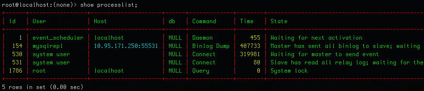

Darle un poco de color a la consola de MySQL
13/01/2015Con el comando grcat de Linux podemos darle color al texto; números, direcciones IP, fechas, etc… así deja de ser aburrida la consola de MySQL.
Ejecutamos el siguiente comando para instalar la nueva tool:
apt-get install grc
Ahora nos bajamos el fichero de configuración del grcat, aquí es donde están definidas las reglas de colores:
wget https://raw.githubusercontent.com/nicola-strappazzon/myterm/master/bash/dotfiles/grcat -O ~/.grcat
Nos queda un último paso, y es editar este fichero para decirle al pager que use el grcat:
vim .my.cnf
Así debería quedar el fichero:
[mysql]
auto-rehash
user = root
pager = grcat ~/.grcat | less -RSFXin
prompt = "\u@\h:\d> "
default-character-set = utf8
Una ves que hayas configurado el fichero de .my.cnf accede a MySQL y ejecuta varios comandos para que notes la diferencia, tienes que ver algo como en la siguiente imagen:

Fin.